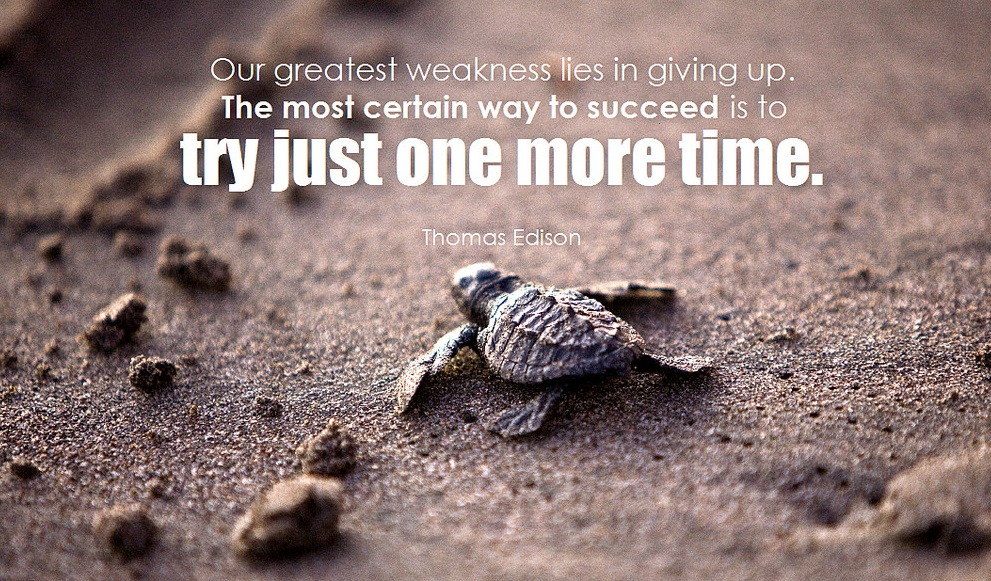
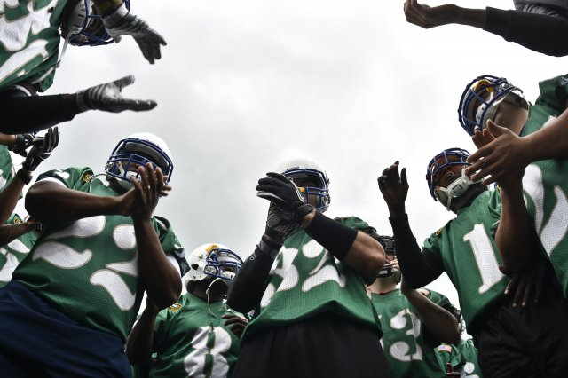
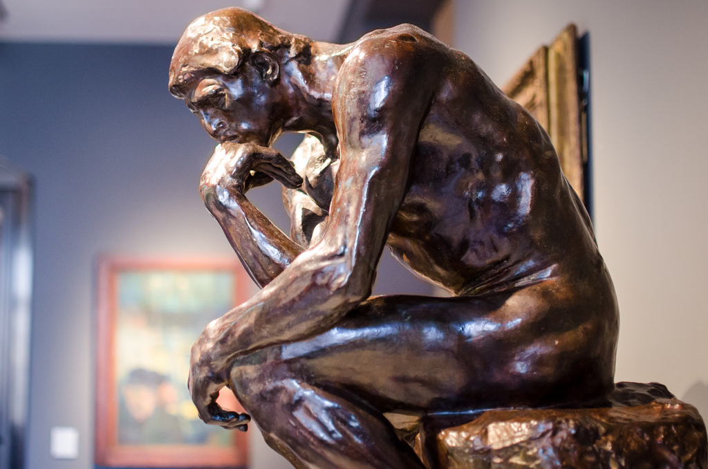

Creativity to me is the use of imagination or your ideas in an artistic way. Creativity helps in many things like building, art ,and my personallity in general. Creativity is important because without it people wouldn't be able to express themselves in a fun way. The picture represents creativity because to me anything thats created by anyone is creative in there own way.

To me persistence is to keep trying over and over in spite of the difficulty that it conjures up. Persistence helps me finish most of my projects on time and with good craftsmanship. Persistence is important because it helps people cary on and complete projects.The picture represents persistence by showing us that we should try, and try over again.

Collaboration to me is working with another acquaintance to finish a project, or create something worthwhile. Collaboration is important because it helps us all work together efficiently. This picture shows collaboration to me in that every sports team has to collaborate, otherwise they won't be able to win the game.
To me communication is when your speaking to a multitude of people effectively. Communication is important because in my own opinion, all my friends wouldn't hang out with me as much. This picture represents communication by how it shows people talking and having conversation's, which is communication.

Inquiry to me is when you ask questions for information. Inquiry is important because if you dont ask questions you wont learn fast at all. The picture represents Inquiry by how it shows The Thinker statue.